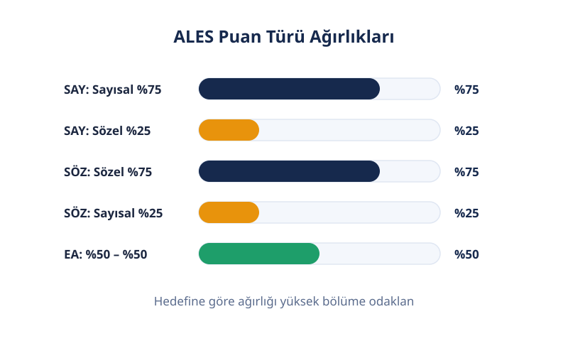
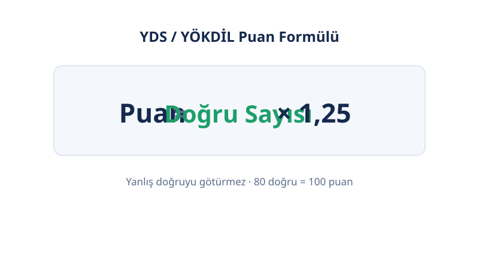

Ana Sayfa › Lisansüstü & Akademik
📚 Lisansüstü & Akademik
Akademik Sınav Puan Hesaplama Araçları
Hedefine uygun sınavı seç, puanını hemen hesapla: ALES, DGS, YDS ve YÖKDİL — dört sınavın hesaplayıcıları ve aralarındaki farklar bu sayfada. Hangi sınava gireceğini bilmiyorsan aşağıdaki karar rehberine bak.
Son güncelleme: 18 Ekim 2026 · Yazar: PuanRobotu Editör Ekibi
Araçlar
Hangi Araç Ne İçin? — Karar Rehberi
| Hedefin | Sınavın | Araç |
|---|---|---|
| Yüksek lisans / doktora başvurusu | ALES (+ dil şartı) | ALES puan hesaplama |
| Dil şartını karşılama | YDS veya YÖKDİL | YDS puan hesaplama |
| Alan odaklı dil sınavı (Fen/Sağlık/Sosyal) | YÖKDİL | YÖKDİL puan hesaplama |
| Ön lisanstan lisansa geçiş | DGS | DGS puan hesaplama |
| Araştırma görevlisi kadrosu | ALES (70+) + dil | ALES puan hesaplama |
| Dil tazminatı | Yalnızca YDS/e-YDS | YDS puan hesaplama |
Dört Sınavda Puanlama Farkları
Yanlış Cevap Cezası
| Sınav | Yanlış Cezası | Formül |
|---|---|---|
| ALES | Var | Net = Doğru − Yanlış/4 |
| DGS | Var | Net = Doğru − Yanlış/4 |
| YDS / e-YDS | Yok | Puan = Doğru × 1,25 |
| YÖKDİL / e-YÖKDİL | Yok | Puan = Doğru × 1,25 |
Dikkat: bazı siteler "4 yanlış 1 doğruyu götürür" kuralını tüm sınavlara geneller; bu yanlıştır. YDS ve YÖKDİL'de ceza yoktur, "net" kavramı bile yoktur.



Puan Ölçeği ve Geçerlilik
| Sınav | Ölçek | Geçerlilik | Sıklık |
|---|---|---|---|
| ALES | 100'lük (70+30 dönüşümü) | 5 yıl | Yılda 3 kez |
| DGS | 150–350 bandı (dönüşüm yok) | Yalnızca o yıl | Yılda 1 kez |
| YDS | 0–100 (doğrusal) | Kuruma göre (TUS/DUS: 5 yıl) | Yılda birkaç kez |
| YÖKDİL | 0–100 (doğrusal) | 5 yıl / doçentlikte süresiz | Yılda birkaç kez |
Tipik Barajlar
| Kullanım | Baraj |
|---|---|
| Tezli yüksek lisans başvurusu | ALES 55 |
| Araştırma görevlisi | ALES 70 |
| Doktora / doçentlik (dil) | 55 puan |
| Dil tazminatı | YDS 70 (C seviyesi) |
Barajlar kuruma göre değişir; üniversite senatoları eşikleri yükseltebilir. Başvuracağın ilandaki şart esastır.
Sık Sorulan Sorular
Akademik hedefim için hangi sınava girmeliyim?
Yüksek lisans veya doktora hedefliyorsan ALES'e girersin; dil şartı için YDS veya YÖKDİL gerekir. Ön lisans mezunu olarak lisansa geçeceksen sınavın DGS'dir. Doçentlikte ALES 70 ve dil puanı aranır. Dil tazminatı için yalnızca YDS/e-YDS geçerlidir. Hedefini netleştir, sonra ilgili hesaplayıcıyı kullan.
Hangi sınavda yanlış doğruyu götürür?
ALES ve DGS'de götürür: her 4 yanlış 1 doğruyu siler (Net = Doğru − Yanlış/4). YDS, e-YDS, YÖKDİL ve e-YÖKDİL'de yanlış cezası yoktur; puan doğrudan doğru × 1,25 ile hesaplanır. Sınavına göre stratejin değişir: cezalı sınavda emin olmadığın soruyu boş bırak, cezasızda hepsini işaretle.
Bu sınavların puanları kaç yıl geçerli?
ALES 5 yıl, YDS ve YÖKDİL kuruma göre (genellikle 5 yıl; doçentlikte YÖKDİL süresiz) geçerlidir. DGS puanı yalnızca girdiği yılın yerleştirmesinde kullanılır; ertesi yıl geçersizdir. Geçerlilik başlangıcı sonuç açıklama tarihidir. Başvuracağın kurumun kılavuzundaki süreyi kontrol et. Tek bir genel süre yoktur, her kurum kendi kuralını yazar.
YDS ile YÖKDİL birbirinin yerine geçer mi?
Çoğu akademik başvuruda evet; ikisinin de formülü doğru × 1,25 ve cezası yoktur. Ama her yerde geçmez: dil tazminatı, AGS yabancı dil öğretmenliği ve bazı kamu atamaları yalnızca YDS/e-YDS ister. Eşdeğerlik kararı ilanı yapan kuruma aittir; başvuracağın yerin şartını oku.
ALES puanımla dil şartını karşılayabilir miyim?
Hayır. ALES sayısal-sözel yeteneği ölçer; dil şartı için YDS veya YÖKDİL gerekir. Doktora başvurusunda genellikle ALES 55 ve dil 55 birlikte istenir. İki sınavın puanı birbirinin yerine geçmez; her birini ayrı ayrı alman gerekir. Bazı üniversiteler dil yerine TOEFL/PTE gibi uluslararası sınavları da kabul eder.
Aynı yıl hem ALES hem YDS'ye girebilir miyim?
Evet, sınavlar birbirinden bağımsızdır; aynı yıl ikisine de girebilirsin. ALES yılda 3 kez, YDS ve YÖKDİL yılda birkaç kez yapılır. Puanların ayrı ayrı hesaplanır ve her biri kendi geçerlilik süresine sahiptir. Doktora başvurusu için ikisini de aynı yıl tamamlayabilirsin, planını buna göre yap.